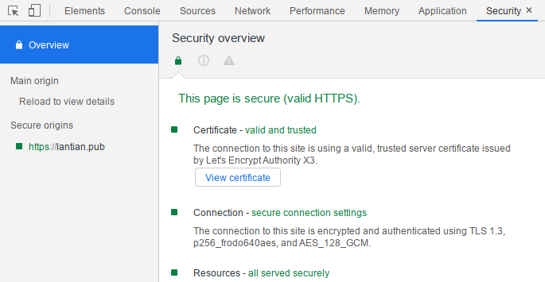

On the modern Internet, most websites already support HTTPS. The SSL/TLS encryption protocol will encrypt user's request and the website's response, so that malicious users along the way cannot steal or tamper with the information. One important component of SSL/TLS protocol is asymmetric cryptographic algorithms. For these algorithms, the key is separated into a public key and a private key, with the public key being public and the private key being protected carefully.
Accessing a HTTPS website usually follows these procedures:
- The website sends its public key (as a certificate) to the browser.
- The browser will verify the public key, in case that a man-in-the-middle modified the key in order to block or tap into the communication.
- The browser (or the operating system) has a list of credible Certificate Authorities (CA) builtin, and they can verify cryptographically that the public key is generated by one of them.
- The CA will use various measures (multiple levels of certificate chain, physically isolated key storage device) to protect their own private key, so that no one can steal their private key and generate trusted certificates at will.
- The browser will contact a server from the CA to lookup the Certificate Revocation List. The List stores all certificates that are indeed generated by the CA, but cannot be trusted anymore due to a system error/private key leak.
- The browser (or the operating system) has a list of credible Certificate Authorities (CA) builtin, and they can verify cryptographically that the public key is generated by one of them.
- After verifying the public key, the browser generates a random key locally for this connection.
- The browser encrypts the random key with the website's public key, and sends it to the website server.
- The encrypted data can only be decrypted with the website's private key, not with the public key, so a man-in-the-middle cannot obtain the random key.
- The website server decrypts the content with the locally stored private key to obtain the browser-generated random key.
- The browser and website server start to talk using the random key with symmetric encryption, where both parties use the same key to encrypt or decrypt, such as AES.
- Asymmetric encryption is no longer used since it's computationally more expensive, while symmetric encryption provides better performance.
Asymmetric encryption guarantees the security of exchanging symmetric keys between the browser and website server, and ensures that the data is not stolen or tampered with.
But with the birth of quantum computers, there comes a slight change. With a quantum computer that is "powerful enough", or having enough number of "qubits" (quantum bits), Shor's Algorithm that runs on quantum computers can efficiently crack traditional asymmetric encryption algorithms including RSA and ECDSA, which are based on the difficulty on decomposing prime factors.
Yet with the heat on quantum computing, quantum computers evolve rapidly. The most powerful quantum computer made public to this day is IBM's 53 qubit computer (See Quantum Supremacy on Wikipedia), still not enough for cracking RSA or ECDSA with Shor's Algorithm, but technology developing at high speed may make this possible any time.
Therefore, cryptographers start to develop asymmetric encryption algorithms that cannot be efficiently cracked with quantum computers, and promote their usage, to prepare for the day when RSA is cracked.
Since late 2016, the Open Quantum Safe Project began integrating existing quantum-resistant algorithms into their liboqs library, and integrate it to popular cryptographic libraries, such as OpenSSL and BoringSSL, to simplify the deployment of new cryptographic algorithms.
At the same time, the project also provides documentation on compilation and integration of software, including nginx, Chromium, etc. Therefore, by making simple modifications according to the documentation, we can be prepared for the birth of a practical quantum computer.
WARNING: All post-quantum cryptographic algorithms here are relatively new, and are under the process of NIST standardization, so they may still have undiscovered weaknesses. Although Open Quantum Safe does provide workarounds to reduce the risk, it's not recommended to use them in production before their standardization process is complete.
nginx / OpenSSL ¶
Since nginx uses OpenSSL or BoringSSL as the cryptographic library, there's no need to make any change on nginx, simply replacing OpenSSL with the Open Quantum Safe version is enough.
Open Quantum Safe provides a modified Dockerfile that serves as a reference.
Referring to the material above, I also modified my Dockerfile that I use to compile nginx, to use Open Quantum Safe's OpenSSL. It is available here.
Compared to compiling a normal nginx, there are 2 main changes:
You need to use Open Quantum Safe's OpenSSL, and additionally download and compile
liboqs, install it to the source code directory of OpenSSL, in order to use it. The related lines in my Dockerfile are 44-52:# Redacted && git clone -b OQS-OpenSSL_1_1_1-stable https://github.com/open-quantum-safe/openssl.git \ # Some personal modifications omitted here, they're not necessary for post-quantum cryptography && git clone -b master https://github.com/open-quantum-safe/liboqs.git \ && mkdir /tmp/liboqs/build && cd /tmp/liboqs/build \ && cmake -DOQS_BUILD_ONLY_LIB=1 -DBUILD_SHARED_LIBS=OFF -DCMAKE_INSTALL_PREFIX=/tmp/openssl/oqs .. \ && make -j4 && make install && cd /tmp \ # RedactedAll files are downloaded to
/tmp. The key is to compileliboqswithcmake, and install it to theoqssubfolder in OpenSSL source code directory.Additional compilation parameters are needed to include
liboqsin nginx. At lines 102-104 in my Dockerfile:# Redacted && ./configure \ # Redacted some nginx parameters --with-openssl=/tmp/openssl \ --with-cc-opt="-I/tmp/openssl/oqs/include" \ --with-ld-opt="-L/tmp/openssl/oqs/lib" \ && sed -i 's/libcrypto.a/libcrypto.a -loqs/g' objs/Makefile \ # Redacted
And proceed to compile nginx normally.
After the compilation and installation is complete, you also need to change the parameters to use the post-quantum asymmetric cryptographic algorithms, including key exchange algorithms and identity verification algorithms:
Key exchange algorithms: used for browsers and websites to exchange symmetric encryption keys.
Simply change the
ssl_ecdh_curveparameter innginx.confto use the elliptic curves of the algorithms, and we're done:ssl_ecdh_curve 'p256_frodo640aes:p256_bike1l1cpa:p256_kyber90s512:p256_ntru_hps2048509:p256_lightsaber:p256_sidhp434:p256_sikep434:prime256v1:secp384r1:secp521r1';nginx -s reloadafter making the modifications.Here only a fraction of the supported algorithms are enabled, mainly for 2 reasons:
- nginx has a limit on the length of the parameter, and will emit an error otherwise;
- The parameters chosen are also supported in the BoringSSL variant of Open Quantum Safe, which is critically important in enabling Chromium support later.
By the way, the key exchange algorithms all start with
p256_, which means a traditional key exchange algorithm is also used along with post-quantum ones. This is to prevent the case that, the new algorithm has mathmatical loopholes that allow even traditional (Von-Neumann) computers to crack this quickly. By using two key exchange algorithms at the same time, a quantum computer cannot crack them (assuming that the new algorithm works), while if the new algorithm is cracked, the key exchange data is still protected at the level equivalent to traditional key exchange, and won't be cracked immediately by traditional computers.Identity verification algorithms: used by Certificate Authorities to generate public/private certificates to websites. In order to use these algorithms, you need to either find a CA that supports post-quantum cryptography (doesn't exist yet) to issue you a new cerificate, or generate one by yourself (not trusted by browser). Neither of them works, so I choose not to use it now.
After finishing configuration, you can use the curl Docker image provided by Open Quantum Safe to test your website:
# Replace the last parameter with desired algorithm, same format as ssl_ecdh_curve
docker run -it openquantumsafe/curl:0.4.0 curl https://lantian.pub --curves p256_frodo640aes
Chromium / BoringSSL ¶
Although we have a commandline curl to verify it works, a full-fledged browser's support makes post-quantum cryptography practical, providing users with better protection. Ope Quantum Safe also provides a modified BoringSSL, that allows you to experience post-quantum cryptography on the most popular browser in the world, once you compile it into Chromium.
Open Quantum Safe also provides a guide to compile Chromium that is availale here. Compared to vanilla Chromium, the 4 main differences are:
git clone https://github.com/open-quantum-safe/boringssl, replacing BoringSSL inthird_party/boringssl/srcin Chromium source code with a modified one.Download
liboqs, compile and install tooqsdirectory in BoringSSL source code:git clone --branch master https://github.com/open-quantum-safe/liboqs.git cd liboqs && mkdir build && cd build cmake .. -G"Ninja" -DCMAKE_INSTALL_PREFIX=<CHROMIUM_ROOT>/third_party/boringssl/src/oqs -DOQS_USE_OPENSSL=OFF ninja && ninja installPatch Chromium with this modification that uses liboqs.
Run
python2 src/util/generate_build_files.py gnunder folderthird_party/boringsslto update dependencies, in order to includeliboqsrelated content.
Then proceed to compile Chromium as normal.
I also modified a Chromium PKGBUILD file that Arch Linux users can use directly. The latest PKGBUILD is available here, while the version when I wrote this article is available here (241cfaa).
Note that compiling Chromium takes a really long time. It took 8 hours on my i7-7700HQ. If you have a weaker CPU, be prepared for waiting all day long.
After the compilation and installation is complete, launch Chromium to access a website with post-quantum cryptography, then open the Security tab in Developer Tools:

Here p256_frodaes is being used, which means you're browsing with post-quantum protection.
My website now supports post-quantum cryptography that you can use as a test. Or you may access the official test site of Open Quantum Safe, which provides all combinations of key exchange and identity verification algorithms, and allows for a more comprehensive test.
An additional note, BoringSSL from Open Quantum Safe only supports a fraction of key exchange algorithms:
P256_BIKE1L1CPA, P256_FRODO640AES, P256_KYBER90S512, P256_NTRU_HPS2048509, P256_LIGHTSABER, P256_SIDHP434, P256_SIKEP434
This list is only available at the official test site. This is why I only selected them in the nginx configuration.